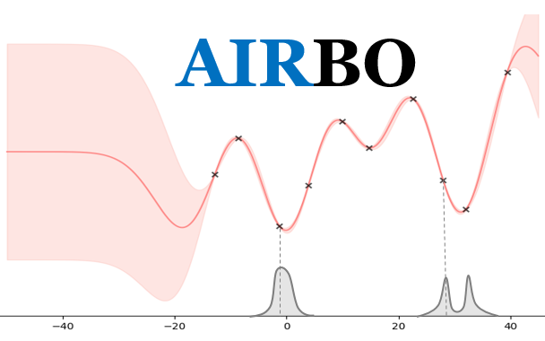
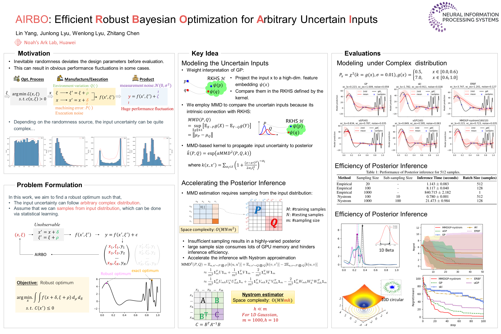

NeurIPS 2023 · Robust Bayesian Optimization
AIRBO
Efficient Robust Bayesian Optimization for Arbitrary Uncertain Inputs
A practical way to optimize expensive black-box systems when the input you choose is not exactly the input the system receives.

Why this problem matters
01
The input drifts
Manufacturing tolerance, execution noise, wind, or changing context can move a selected design x to an unobserved actual input x′.
02
The best point can be fragile
Optimizing only the nominal function may find a sharp peak that performs poorly after a small perturbation. A robust solution should perform well on average under its whole uncertainty distribution.
03
AIRBO optimizes what is actually experienced
It uses samples from arbitrary input distributions without assuming they are Gaussian or that the exact perturbed input is observable.
From a point estimate to a distribution-aware search
Propose a nominal input x.
Represent the possible actual inputs as samples from P(x).
Use Maximum Mean Discrepancy (MMD) to build a kernel over distributions.
Use the GP posterior and an acquisition function to select the next query.
Robust objective
The important shift is conceptual: the object being optimized is not a single point evaluation, but the expected behavior induced by uncertain inputs.
What makes AIRBO efficient
01 · MMD kernel
Compare arbitrary uncertainty directly
Maximum Mean Discrepancy compares probability distributions through their embeddings in a reproducing kernel Hilbert space. This lets the GP propagate input uncertainty into its posterior without imposing a Gaussian shape.
02 · Nyström approximation
Keep posterior inference practical
Rather than forming the full quadratic MMD estimate, AIRBO uses a smaller set of landmark samples. The paper reduces the space complexity from O(m²) to O(mh), where h ≪ m.

Evidence from the paper
Why AIRBO is useful
Robustness becomes part of the model, not an afterthought.
When every expensive experiment is exposed to input variation, AIRBO turns that variation into a first-class object for Bayesian optimization. The result is a search procedure designed for the behavior a system will actually experience.
arXiv abstract ↗
NeurIPS record ↗
Implementation ↗
Poster source ↗